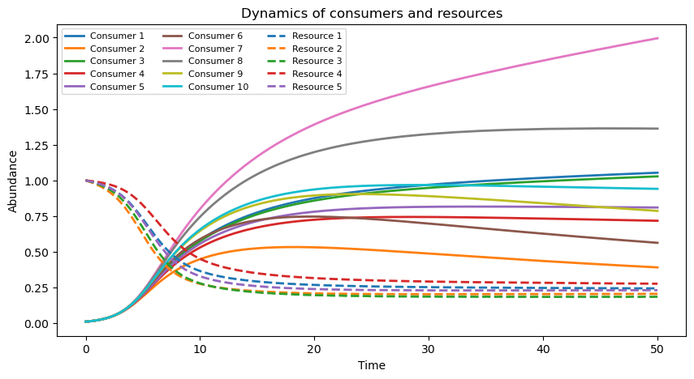

Basic usage#
This page gives a compact end-to-end example: generate a synthetic modular community, define MiCRM dynamics, integrate the ODE system, and inspect the resulting trajectories.
The examples below assume the documentation notebook is run from docs/content, where a copy of param.py is available. In a package workflow, import the parameter utilities from the installed package or from src.
1. Generate community parameters#
The first step is to choose the community size and generate uptake and leakage parameters. np.random.seed makes the synthetic community reproducible.
import numpy as np
import param
np.random.seed(42)
# Community size
N = 10 # number of consumers
M = 5 # number of resources
# Modularity controls
λ = 0.1
N_modules = 2
s_ratio = 10.0
# Consumer-resource uptake matrix
u = param.modular_uptake(N, M, N_modules, s_ratio)
# Total leakage fraction for each resource
lambda_alpha = np.full(M, λ)
# Consumer and resource turnover parameters
m = np.full(N, 0.2)
rho = np.full(M, 0.5)
omega = np.full(M, 0.5)
# Consumer-specific leakage tensor
l = param.generate_l_tensor(N, M, N_modules, s_ratio, λ)
u.shape, l.shape
((10, 5), (10, 5, 5))
2. Define system dynamics#
The derivative function receives time t and state vector y. The first N entries of y are consumer biomasses and the final M entries are resources.
def dCdt_Rdt(t, y):
C = y[:N]
R = y[N:]
dCdt = np.zeros(N)
dRdt = np.zeros(M)
for i in range(N):
dCdt[i] = sum(
C[i] * R[alpha] * u[i, alpha] * (1 - lambda_alpha[alpha])
for alpha in range(M)
) - C[i] * m[i]
for alpha in range(M):
dRdt[alpha] = rho[alpha] - R[alpha] * omega[alpha]
dRdt[alpha] -= sum(
C[i] * R[alpha] * u[i, alpha]
for i in range(N)
)
dRdt[alpha] += sum(
sum(
C[i] * R[beta] * u[i, beta] * l[i, beta, alpha]
for beta in range(M)
)
for i in range(N)
)
return np.concatenate([dCdt, dRdt])
3. Run the simulation#
Initial conditions should contain both consumers and resources. Here all consumers start at low biomass and all resources start at abundance one.
from scipy.integrate import solve_ivp
C0 = np.full(N, 0.01)
R0 = np.full(M, 1.0)
Y0 = np.concatenate([C0, R0])
t_span = (0, 50)
t_eval = np.linspace(*t_span, 300)
sol = solve_ivp(dCdt_Rdt, t_span, Y0, t_eval=t_eval)
sol.success, sol.message
(True, 'The solver successfully reached the end of the integration interval.')
4. Plot trajectories#
import matplotlib.pyplot as plt
fig, ax = plt.subplots(figsize=(10, 5))
for i in range(N):
ax.plot(sol.t, sol.y[i], label=f"Consumer {i + 1}", linewidth=2)
for alpha in range(M):
ax.plot(
sol.t,
sol.y[N + alpha],
label=f"Resource {alpha + 1}",
linestyle="dashed",
linewidth=2,
)
ax.set_xlabel("Time")
ax.set_ylabel("Abundance")
ax.set_title("Dynamics of consumers and resources")
ax.legend(ncol=3, fontsize=8)
plt.show()

5. Summarise final state#
The final state can be used to compare parameter scenarios or to initialise downstream stability analysis.
final_C = sol.y[:N, -1]
final_R = sol.y[N:, -1]
print("Final consumer biomasses:", np.round(final_C, 4))
print("Final resource abundances:", np.round(final_R, 4))
print("Persisting consumers:", np.sum(final_C > 1e-6), "of", N)
Final consumer biomasses: [1.0536 0.3904 1.028 0.717 0.8099 0.5625 1.9956 1.3624 0.7861 0.9406]
Final resource abundances: [0.2432 0.2048 0.1846 0.276 0.2305]
Persisting consumers: 10 of 10
Practical tips#
Increase
NandMgradually; large systems are easier to debug after the small case works.Keep a fixed random seed while developing an experiment, then repeat across many seeds for inference.
Check
sol.successbefore interpreting trajectories.Compare scenarios by changing one parameter family at a time, such as
λ,s_ratio,rho, orm.If trajectories become negative or the solver struggles, try smaller tolerances, different solvers, or parameter ranges with slower turnover.